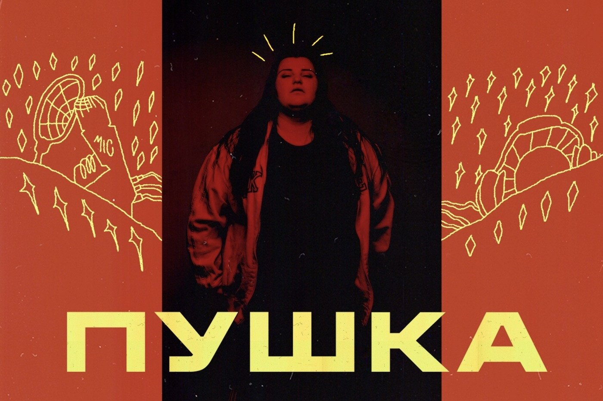

Год назад, на твоём предыдущем дне рождения в 2018-м, я запускал пару песен рэперши Alyona Alyona, тогда только-только ставшей известной: на тот момент, собственно, у неё всего пара клипов и была.
А теперь я ощущаю, что за прошедший год она успела сначала стать для меня вообще самым интересным из происходящего сейчас в музыке, а затем перестать им быть. И захотелось написать пост: про неё и так уже много написано, но те тексты, которые читал, казались мне упускающими что-то важное. (Разве что выпуск «Вписки» с ней замечательный.)
Разговоры об Алёне обычно начинают с обсуждения её пола, фигуры, бэкграунда и языка. Мне хочется начать иначе: прежде всего, её музыка — попросту очень мощный хип-хоп вне всякой зависимости от контекста. Техничная и разнообразная читка, удачные переходы к пению, хорошие биты — и, что ещё важнее, личная харизма, которая ощущается уже в самих песнях, так что видеоряд не обязателен. Можно понятия не иметь, кто это исполняет и как выглядит артист, и всё равно будет качать. Я однажды зачитывал её песню на вечеринке конференции для разработчиков, после чего докладчик из Испании спросил меня, как найти оригинал в Spotify: он не знал ни слова из текста и даже не услышал вокал самой Алёны, но песня сама по себе такая мощная, что пробила все культурные границы.
Так что все дальнейшие похвалы, где контекст уже будет учитываться — абсолютно без скидок на что-либо, Алёна не «крутая для девушки в традиционно мужском жанре», а просто крутая.
А с контекстом, пожалуй, интересно вот что. Про Джеймса Мёрфи из LCD Soundsystem когда-то писали «unlikely frontman» (мол, не молодой стройный сердцеед, а какой-то медвежонок — не то что бы мы против, но неожиданно, что такой возглавляет группу). Так вот, это ерунда по сравнению с тем, насколько unlikely была Алёна в качестве новой хип-хоп-звезды.
- Во-первых, на постсоветском пространстве с женским хип-хопом всё вообще крайне скудно и печально.
- Во-вторых, в России никогда не становился популярен хип-хоп на украинском.
- В-третьих, хип-хоп очень часто агрессивный — а Алёна (в прошлом воспитательница детского сада) безумно добрый человек.
- В-четвёртых, даже если хип-хоп не злой и баттловый, то уж мат казался его неотъемлемой частью — а у Алёны нет и этого.
- В-пятых, она ещё и жила в посёлке — то есть творила не в окружении столичных студий и продюсеров.
- В-шестых, она заявила о себе только в 27 лет — и если у 17-летних рэперов недочёты могут выглядеть как «ну, ещё подучится», то тут скорее вызвали бы реакцию «куда ты лезешь».
- Ну и, конечно, в обществе, где довлеют конвенциональные представления о женской красоте и популярные артисты обычно им соответствуют, комплекция Алёны тоже выбивается из всех рамок.
В общем, каждый из этих факторов сам по себе выглядит снижающим шансы на успех, а уж когда они собираются все вместе, это выглядит как описание анти-успеха.
И когда появился самый первый клип «Рибки», намеренно пёстрый, в комментариях The Flow на это в целом была реакция как на мем. Толстая воспитательница из украинского посёлка выпустила хип-хоп-клип, где она в купальнике на водном мотоцикле? Ну, давайте повеселимся, а завтра к чему-то другому перейдём — может, волнистый попугайчик хип-хоп запишет. Хм, кстати, а зачитывает воспитательница ничего так, даже удивительно.

Но когда появился второй клип, реакция оказалась другой: теперь это воспринимали уже не как курьёз, а на полном серьёзе писали, что это лучше 90% русскоязычного хип-хопа. Комментаторы сами офигевали от возникающего у них когнитивного диссонанса, но не могли не отдать должное.
Причём отдельно интересно, что негативной реакции не было вообще. Мне запомнились чьи-то слова (не дословно): «Всё это время, пока в комментах Flow хейтили даже самых признанных людей, от Кендрика Ламара до Оксимирона, я думал: каким же должен быть рэпер, чтобы тут к нему никто не смог придраться? Окей, теперь знаю, спасибо».
В комментариях на ютюбе похожая благодать, там дружно пишут о том, насколько она крута (и это при том, что обычно пишут рунетчики про полных девушек).
А потом вышел альбом «Пушка» — и оказался именно пушкой, я заслушал его на репите и выучил наизусть пару песен (при том, что не знаю украинского, так что поначалу даже не был уверен в их содержании). Альбом показал, что успех первых клипов не был случайностью, и много чего к ним добавил. А всё то, что казалось факторами «против», обернулось его достоинствами: мужского русскоязычного агрессивного хип-хопа мы уже слышали более чем достаточно, а вот женский украиноязычный позитивный на этом фоне выглядит очень свежо и интересно.

Ещё «Пушка» показывает, как рэпер может быть позитивным и драйвовым одновременно, обходясь без хейта, но не становясь благостным и скучным. При этом, где-то обходя традиционный хип-хоп-дискурс стороной, в других местах Алёна берёт и присваиваивает его себе: когда она заявляет «я знаю, чем дышит улица», внезапно понимаешь, что у воспитательницы из посёлка это звучит не менее убедительно, чем у трудного подростка с городской окраины; улицы вообще-то дышат не только пацанскими разборками.
Конечно, Алёна не случайно записала альбом такого уровня: как выяснилось, она много лет и слушала хип-хоп, и админила паблик о женском хип-хопе, и сама сочиняла. Тем не менее, факт остаётся фактом: в 2019 году важнейшим хип-хоп-исполнителем стала (теперь уже бывшая) воспитательница детского сада из украинского посёлка, добрейшей души человек. Я считаю, что это прекрасно.
На фоне всего этого благолепия, однако, возникал вопрос: что будет дальше. При всей крутизне «Пушки» возникало чёткое ощущение, что следующий альбом окажется её повтором, и это будет уже куда менее интересно. Поэтому я думал, что при всём восхищении Алёной проведу пару лет в тревожном ожидании второго альбома, а затем с печальным вздохом отползу переслушивать первый.
Два года ждать не пришлось: совсем недавно она сама взяла и выпустила новую 8-песенную запись «В хатi МА». Тут комментаторы Флоу дружно написали то, чего я и опасался: ну, с мастерством не поспоришь, но это превращается в конвейерный «хип-хоп от Алёны». И послушав, я по большей части вынужден был с ними согласиться: пара песен очень радует, но многие другие оставили именно такое впечатление «уже слышанного». Насколько я затёр до дыр первую запись, настолько нет желания затирать вторую.
Тут бы расстроиться — но по итогам я даже чувствую некоторое облегчение. Синдром второго альбома вообще распространён, мало кому удаётся удивлять им как первым — и вместо того, чтобы два года тревожиться по этому поводу, я уже сейчас могу расслабиться и просто получать удовольствие от полюбившихся песен с обеих записей. Сама по себе Алёна всё равно остаётся прекрасной (как написали в комментариях к «Вписке», это «отдел по производству добра и света в этом мире»). И несмотря на разочарование от второй записи, по-прежнему есть чего ждать в будущем: она ещё ни разу не выступала в России, и мне хотелось бы впервые побывать на её концерте.
А ещё, думаю, в 2020-м полномасштабной хип-хоп-звездой станет и другая девушка — Drummatix. Но о ней, видимо, будет следующий пост через год! А пока вот моё любимое у Алёны: